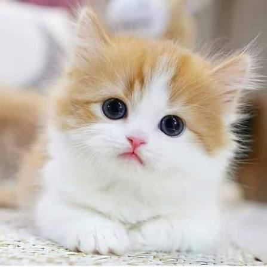
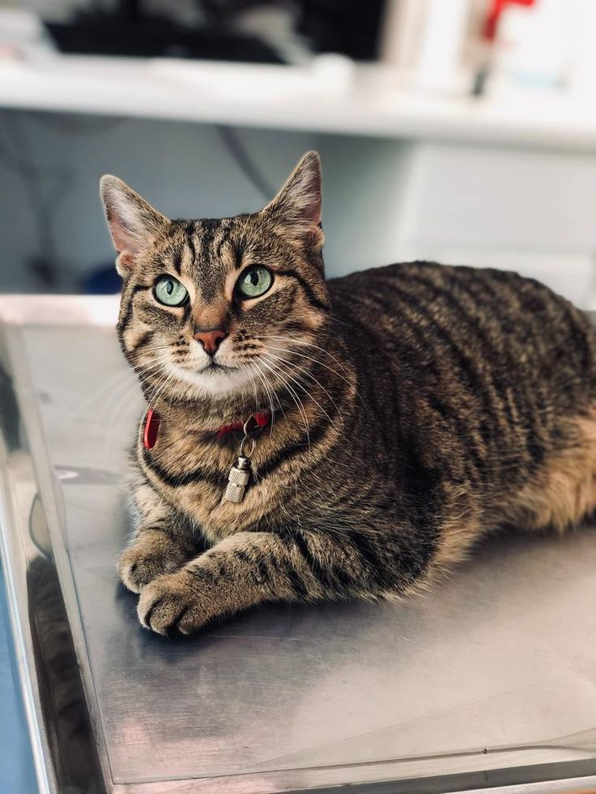
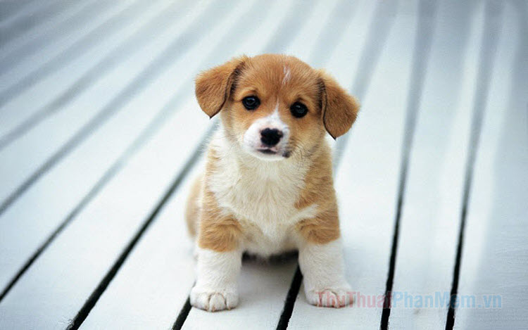
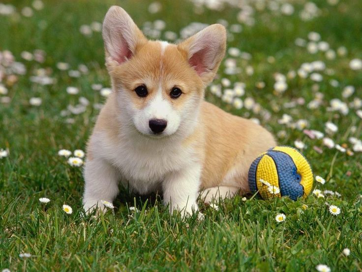
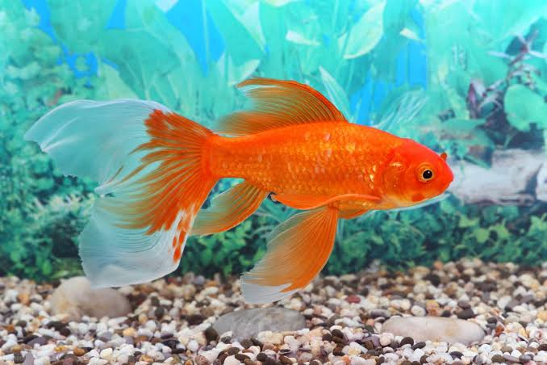
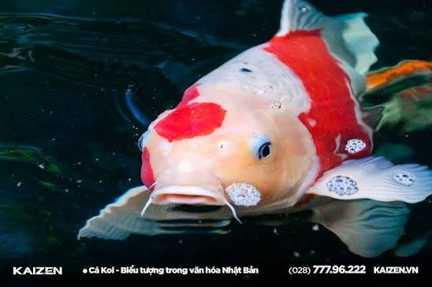
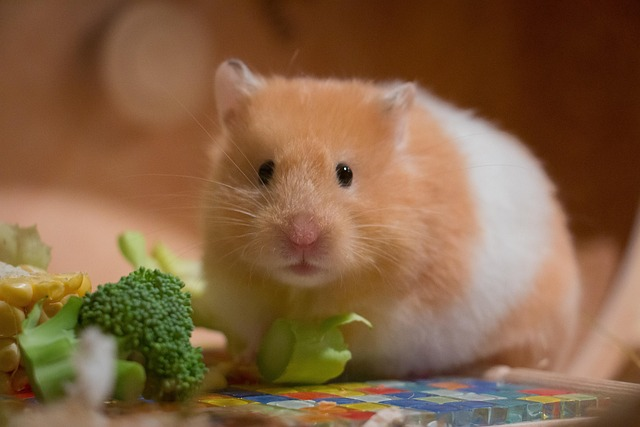
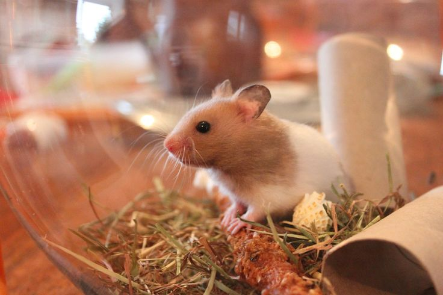

Cá vàng là loài cá nước ngọt nhỏ thường được nuôi làm cảnh. Cá vàng là một trong những dòng cá được thuần hóa sớm nhất và ngày nay vẫn là một trong những loài cá cảnh phổ biến.

Cá chép Koi hay cụ thể hơn Cá chép Nishikigoi là một loại cá chép thường đã được thuần hóa, lai tạo để nuôi làm cảnh trong những hồ nhỏ.

Chuột hamster, còn được gọi là chuột đuôi cụt hoặc chuột đất vàng, là một loài động vật gặm nhấm thuộc phân họ Cricetinae.

Chuột hamster được nuôi để sử dụng trong nghiên cứu khoa học và cũng trở thành một loài vật nuôi phổ biến cho những người yêu thích động vật nhỏ.
Ở phần 01, 04 ảnh đều cùng nằm trên một hàng ngang. Vì ta không sử dụng thẻ div hoặc thẻ br
Ở phần 02, 04 ảnh nằm trên mỗi hàng khác nhau. Vì mỗi ảnh nằm trong mỗi thẻ div riêng biệt.
img là thẻ inline. Còn div à thẻ block.